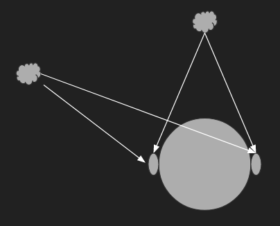

MEDIAART 2G03: Stereo basics
Auditory cues for spatial perception
Our ability to hear where things come from is the result of our brain and our body responding to different "cues" that occur in the environment.
One cue that we discussed earlier in the materials about the spectrum and filters is the fact that the pinnae (our outer ears) are actually directionally sensitive filters. You can demonstrate this for yourself by using your hand to close off one ear as much as possible. And then listen to some sounds around you and you'll notice that you can probably still tell, for the most part, where they come from. Your brain and your body is using the information provided - it’s noticing differences in the spectrum that arise at that single ear, using what it has learned about that information in the past to give you some sense of where a sound comes from.
Another cue that we use is visual information. Visual information can be combined with auditory information to produce a perception of location. An example of this that will be familiar to many of us is our perception of the location of voice sounds in film or television. Almost regardless of where the loudspeaker is located in a cinema, we will tend to hear a voice sound as if it's located where we see that character moving their lips. Visual information, in this sense has the potential to override the information that arrives at our ears. It overrides information that we might otherwise have about where the loudspeakers are, about where sound sources are actually physically located in a given situation.
However, it's the difference between the signals that arrive at each of two ears that is probably the most influential and powerful cue that a brain and body uses to determine the apparent location of a sound source. And what we'll see in a little bit more detail in a second is that this difference in what arrives at each of our two ears can actually be broken down into two separate cues: Interaural level difference (ILD) and interaural time difference (ITD).

Interaural Level Difference (ILD)
Let's talk about interaural level difference (ILD). First of all, when a sound is on axis, in other words, when it's centered with respect to our two ears, it has the same distance to travel to each ear. So imagine that the fluff ball on the right/top [in the image above] is a sound source. And there’s a listener, and they have two ears. We draw a line from that centered sound source to both ears. And we can see that those lines are both the same length. There's the same distance to both ears when the sound source is centered with respect to the ears. And since it travels the same distance, the level of that signal will be attenuated or reduced by the same amount as it arrives at each year. We know that as sound signals travel through space, it is attenuated (ie. Inverse distance law). But these two sounds signals, both originating from the sounds, the same sound source will be attenuated by the same amount as they arrive at each year. So they'll arrive with the same level.
But what if we have another sound source and it's off axis like the one over on the left [in the image above]? Then we can see that the geometry changes. It'll be further from one ear than it is from another. And as a result of that increase in distance to one year, it'll be attenuated or reduced more as it arrives at the ear, which is further away. And this is interaural level difference or ILD. Moreover, the inverse square law that talks about how sound is attenuated as it travels a distance through, through space and through the air, it tells us that sound level is reduced by roughly 6 db for each doubling of the distance. And this means if you think about it a little bit, that this ILD cue is going to be more impactful when sound sources are close to the head. When we're very, very far away from a sound source, the interaural level differences are not going to be very significant because the distance from one ear to another, which is the maximum difference in distance we can have for a path from a sound source to our ears is going to be very small in proportion to the overall distance. So the levels are going to be very similar to each other in both ears. But when a sound source is close to us, then the difference in distances, in the distance that the sound has to travel to reach either of our ears is going to make a big difference to the apparent level at each of those ears.
Interaural Time Difference (ITD)
So now let's talk about the other cue, interaural time difference (ITD). When a sound is on-axis, it is centered with respect to our two ears. Again, it has the same distance to travel to each ear. Since it travels the same distance, it takes the same time to travel to each ear and thus arrives at the same time. But if a sound is off axis, then it's further from one of the ears, and this means that it will arrive later at the further ear. In this connection, we should note that the speed of sound is 344 m/s at 20 degrees Celsius and sea level (this can be a useful figure to remember in thinking about the acoustics of different situations). So given those figures, it takes sound about 0.0005 seconds (a half millisecond) to travel 80 centimeters, the approximate width of a human head. If we add a sound source that was directly to our left, the energy from that sound source might arrive a half millisecond later at the right ear than it did at the left ear. We're talking about very small differences of time. But our auditory perception system has evolved over an incredibly long period of time than the time of life on Earth, in order to be able to use these differences to our advantage. After all, if you can tell precisely where something is in relation to you by sound, and it's something that might eat you, knowing exactly where it's coming from could be the difference between life and death. So as a result of this long evolutionary process, we have been able to use these two cues, interaural level difference and interaural time difference to form a very, very precise perception of where things appear to come from. A final note about interaural time difference before moving on, the impact of this is not directly impacted by distance, unlike the interaural level difference cues. If a sound source is exactly on our left (90 degrees off axis), it doesn't matter how far away it is. The time difference that it takes for that signal to get from this ear to the other ear is going to be the same because that distance, the distance between our two ears has stayed the same.
Ways to make stereo signals
So we use these two cues (ILD and ITD) to form our perceptions of the space of sound together with some other cues, like we saw. How can we make recordings that contain these cues, aka stereo signals? These would be recordings that take advantage of our highly evolved sense of the space of sounds. There's a bunch of different ways that we're going to talk about in this section of the course...
One method is panning (covered in more detailed in a separate video, as well as in our full-class meeting and a tutorial), and that's where we take a mono signal and we distribute it between left and right channels in proportion to a panning position. This is commonly built into digital audio workstations.
Another technique in some ways related to panning, but quite different, is the technique of pseudo-stereo (covered in more detail in another separate video, as well as in our full-class meeting and a tutorial). That's about taking a mono signal and giving it spatial cues by generating multiple channels using different time delays and filters, etc, on at least one of the channels.
A third important technique is the technique of stereo recording, which is where we use two microphones to record different signals from the same situation. This is a very important technique also, and so is covered in its own page on this web garden.
And finally, there are also stereo manipulations. These are processing techniques where we take existing stereo signals and we transform them in various ways that increase or decrease or scramble the spatial cues in those existing stereo recordings. For example, a DAW might have a plugin for "stereo widening" - it takes the existing difference between the left and right signals and uses that to make a "different difference" between the two signals in some systematic way.
We have these four different ways of making stereo signals, and they're all very useful in different times and places.
Issues/Challenges with Stereo Signals
Let's consider a little bit some of the general issues or challenges that we might encounter when evaluating stereo signals or when trying to make them, trying to use them in projects.
One very broad and general issue is the issue of realism. In other words, what kind of perceptions of position and movement do we get when we use specific techniques with specific types of signals? This is a complex area. It's not possible to say that a given technique is simply realistic or not realistic. But we do have some rules of thumb or some heuristics about what seems to be more realistic or less realistic or realistic in a particular way. I think the important thing to keep in mind when considering the realism of stereo signals is that there's no such thing as a realism where what you have is simply a copy of the world - when we're dealing with audio technologies, we’re always dealing with representations and reflections and certain kinds of copies of the world that are not the same, never the same as what they were copied from. I think the question of realism is not so much a question of what's realistic versus not realistic - it's more a question of focusing our attention on the specific nature of the representations we get and the perceptions that we get. In what way is a particular signal or recording “realistic”?
Another issue we might encounter is the difference between headphone playback and loudspeaker playback. Stereo signals involve having a left signal and our right signal that are different than each other. Now when we listen to that with headphones, we're listening to those two signals very directly. Our left ear is getting, is getting the left signal, and our right ear is getting the right signal. When we play that back in a room with loudspeakers, it's not so straightforward. In that situation, the left signal is arriving at both of our ears, although it's traveling over a different path to get there. And the right signal is also arriving at both of our ears and traveling over a different path to get there. So things that sound a particular way with headphones may not sound the same way when we listen to them on loudspeakers in a room.
And similarly, when we take stereo signals and we play them with different configurations of loudspeakers very close together, very far apart, pointed different ways that will also impact the kinds of perceptions we get from these stereo signals.
And a final very general issue that we'll encounter it talking about stereo techniques is the issue of mono compatibility. What happens when we take our stereo signals and we down mix them to mono by mixing together the left and right signals and having just one signal again? When we do this, it's possible for things that are opposite in the two signals to cancel each other out, and also for particular sound sources to disappear or be reduced in their apparent loudness. And at the same time, it's also possible for some things to get louder if they add together in a particular way when we mix those two signals together. So if we care about mono, we need to make sure that we're also listening to our stereo signals in this mono way so that we know what happens when someone listens to them in mono.
It used to be that this (mono compatibility) was very important because there were so many mono playback devices in the world. AM radio, car radios, television for a very long time only had a single channel of playback. It was mono playback. So were movies (often, until a certain point). With cinema, this was very important because it was very common for a long period for cinemas to have very detailed sound system, stereo or even more than stereo. But then home movies would be played back on televisions that only had mono. And so the soundtrack component of that film had to work both in stereo for the cinema environment and in mono for the home environment. Nowadays, it's not as important as it used to be. Stereo devices have become much, much, much more ubiquitous than they used to be. But there are still situations where people listen in mono. For example, someone listening to something from a telephone without a smartphone, without headphones is, depending on the smartphone, probably going to be listening in mono. And when we listen to something directly out of the computer, a set of computer speakers, there might technically be two speakers there, but they might be so close together that really what we hear is something kind of like a mono signal. So this issue of mono compatibility has become less severe than it used to be. But it's still something that we might need and want to think about.